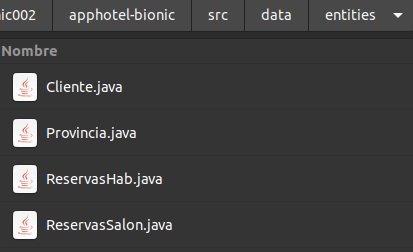

Base de Datos:
Manual de administrador
En este manual trataremos aspectos técnicos de la Base de Datos empleada para almacenar los registros de los clientes.
1. Creación de la Base de Datos
La tecnología escogida para el almacenamiento persistente de la aplicación es el sistema gestor de bases de datos (SGBD) HSQLDB. La creación de la Base de Datos, se ha realizado desde la aplicación manager de HSQLDB. Para ejecutar este manager debemos ejecutar la siguiente linea desde un terminal:
El paguete donde se encuentra el Manager es: org.hsqldb.util.DatabaseManager. Un ejemplo de ejecución sería:
Al ejecutar la línea de código anterior se nos abrirá la siguiente ventana:
En esta ventana se le dará nombre a la conexión para que el Manager la almacene y el siguiente acceso sea mucho más rápido. El tipo de conexión será Standalone. Se define el driver para conectarnos con la base de datos, en este caso se emplea el driver JDBC. En el campo URL se define la ruta donde se encuentra la BD, se debe tener en cuenta que si se define una ruta donde no hay ninguna base de datos, la creará. Finalmente se establecen las credenciales de acceso a la BD.
Una vez creada la conexión se abrirá la siguiente ventana:
En el manager se puede ver la estructura de la BD, así como información adicional acerca de la BD en el árbol de la izquierda.
Por otro lado, en la sección de la derecha se visualizan dos botones y un cuadro de texto en blanco. El botón “Clear” sirve para limpiar el campo de texto, en este campo de texto se introducen las sentencias SQL (se recomienda ejecutar las consultas de una en una), y las ejecutamos haciendo click en el botón “Execute”.
Las sentencias SQL para crear las tablas, e insertar datos iniciales de la BD de la aplicación, se encuentran en el mismo proyecto en la ruta “PathApp/src/data/sentences. En esta ruta se pueden ver 4 ficheros SQL (extensión .sql), uno por cada tabla creada en la BD.
2. Lanzamiento del servicio de la BD
Una vez creada la BD, para poder conectarse a la misma, será necesario lanzar el servicio para establecer el servidor de conexión a la BD. Para ello ejecutamos el siguiente comando desde una terminal:
java -cp [ Ruta a hsqldb.jar ] [ Paquete de lanzador del servidor ] -database.0 [ Ruta absoluta de la BD ] -dbname.0 [ Nombre del servidor ]
Donde el paquete del lanzador del servicio será: org.hsqldb.Server, en -database.0 establecemos la ruta donde se encuentra la BD, y el nombre establecido será el que prefiera el usuario.
Ejemplo de comando de lanzamiento del servidor:
Se deberá dejar abierta la terminal donde ejecutemos el comando, y para cerrar el servidor, se debe pulsar la combinación de teclas en la terminal Ctrl + C para finalizar el servicio.
3. Código de conexión con la BD
La aplicación, en su método start(), el cual se ejecuta al inicio de la aplicación, ejecuta las siguientes lineas de código para conectar la aplicación con la Base de Datos:
Donde las variables empleadas serían de las clases:
→ emf: EntityManagerFactory
→ em: EntityManager
→ conexión: Connection
Se realizan dos conexiones con la Base de Datos.
La primera, a través de la unidad de persistencia (persistence.xml → AppHotelPU) de la clase EntityManager, la cual permite la manipulación de registros de la BD a traves de las clases entidad de las cuales se hablará posteriormente en este mismo manual. Este fichero de persistencia está definido con el siguiente código XML:
Y de forma gráfica:
La segunda se almacena en la variable conexión a través del método crearConnection(), el cual ejecuta las siguientes lineas de código:
En la ruta de la aplicación /scr/data/entities, encontramos las clases entidad, las cuales sirven para manipular los registros de la base de datos. Estas clases entidad permiten extraer registros de la BD en forma de objetos manipulables desde la aplicación (manipulación mediante código). Si se fija en estas clases, podrá ver que realiza el mapeo de los campos de cada registro a través de las anotaciones JPA (JPA Annotations).
Se recomienda no modificar estas clases, ya que cualquier modificación de estas clases puede suponer un error fatal en el funcionamiento de la aplicación.
También se recomienda ver estas clases para saber los métodos que se pueden emplear para manipular los registros desde código. Se debe tener en cuenta que estos métodos son utilizados en las clases Clientes.java, Habana.java y Habitaciones.java. Cualquier modificación de estas clases correrá a cuenta y riesgo del administrador que lo modifique, no se garantiza la consistencia de la aplicación una vez modificadas estas clases.

5. Manuales oficiales (Oracle y Derby)
Para saber más acerca del funcionamiento de la metodología utilizada deberá dirigirse a los siguientes manuales de las tecnologías empleadas para la creación de la BD.
API persistence Oracle → javax.persistence.
HSQLDB → Documentation.
6. Contacto con desarrolladores.
Si la problemática persiste, se recomienda ponerse en contacto con los desarrolladores de la aplicación.
Antonio Medina Maldonado→ antoniomedina281@gmail.com.
Damian Hermida Ramos → damian.hermida.ramoss@gmail.com.
Francisco García Domínguez→ franciscojose.garciadominguez@gmail.com.
José Bravo Castillo → jobravcas@gmail.com.